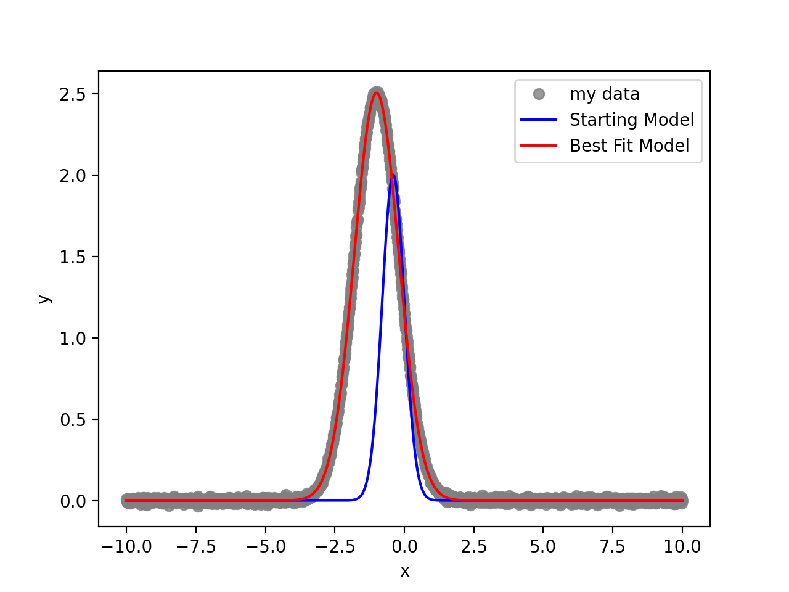

Tutorials¶
Example 1: Fitting a Gaussian with an MSE objective.¶
# Standard imports
import numpy as np
import matplotlib.pyplot as plt
# Import optimize
# import optimize as opt
from optimize.knowledge import Parameter, Parameters
from optimize.data import SimpleSeries
from optimize.frameworks import OptProblem
from optimize.models import DeterministicModel
from optimize.objectives import MSE
from optimize.optimizers import IterativeNelderMead, SciPyMinimizer
def gauss(x, amp, mu, sigma):
return amp * np.exp(-0.5 * ((x - mu) / sigma)**2)
# Define a model for a Gaussian function.
class GaussianModel(DeterministicModel):
def build(self, pars):
return gauss(self.data.x, pars["amp"].value, pars["mu"].value, pars["sigma"].value)
# An x grid
dx = 0.01
x = np.arange(-10, 10 + dx, dx)
# True parameters
pars_true = Parameters()
pars_true["amp"] = Parameter(value=2.5)
pars_true["mu"] = Parameter(value=-1)
pars_true["sigma"] = Parameter(value=0.8)
# Noisy data
y_true = gauss(x, pars_true["amp"].value, pars_true["mu"].value, pars_true["sigma"].value)
y_true += 0.01 * np.random.randn(y_true.size)
# Create a data object
data = SimpleSeries(x=x, y=y_true, label="My data")
# Guess parameters and model
pars_guess = Parameters()
pars_guess["amp"] = Parameter(value=2.0)
pars_guess["mu"] = Parameter(value=-0.4)
pars_guess["sigma"] = Parameter(value=0.4)
model_guess = gauss(x, pars_guess["amp"].value, pars_guess["mu"].value, pars_guess["sigma"].value)
# Make a model
model = GaussianModel(data=data)
# Create a mean squared error score function
obj = MSE(model=model)
# Create the opt problem
optprob = OptProblem(p0=pars_guess, obj=obj, optimizer=SciPyMinimizer())
# Optimize the model via Nelder Mead
opt_result = optprob.optimize()
pars_best = opt_result["pbest"]
# Print the best fit pars
print(pars_best)
# Build the best fit model
model_best = model(pars_best)
# Plot
plt.plot(x, y_true, marker='o', lw=0, label="my data", c='grey', alpha=0.8)
plt.plot(x, model_guess, label='Starting Model', c='blue')
plt.plot(x, model_best, label='Best Fit Model', c='red')
plt.xlabel('x')
plt.ylabel('y')
plt.legend()
plt.show()
The result …
Example 2: Fitting a Gaussian with a Chi-2 objective.¶
# Standard imports
import numpy as np
import matplotlib.pyplot as plt
# Import optimize
# import optimize as opt
from optimize.knowledge import Parameter, Parameters
from optimize.data import SimpleSeries
from optimize.frameworks import OptProblem
from optimize.models import DeterministicModel
from optimize.objectives import Chi2
from optimize.optimizers import IterativeNelderMead, SciPyMinimizer
def gauss(x, amp, mu, sigma):
return amp * np.exp(-0.5 * ((x - mu) / sigma)**2)
# Define a model for a Gaussian function.
class GaussianModel(DeterministicModel):
def build(self, pars):
return gauss(self.data.x, pars["amp"].value, pars["mu"].value, pars["sigma"].value)
# An x grid
dx = 0.1
x = np.arange(-10, 10 + dx, dx)
# True parameters
pars_true = Parameters()
pars_true["amp"] = Parameter(value=2.5)
pars_true["mu"] = Parameter(value=-1)
pars_true["sigma"] = Parameter(value=0.8)
# Noisy data
y_true = gauss(x, pars_true["amp"].value, pars_true["mu"].value, pars_true["sigma"].value)
noise_level = 0.1
y_true += noise_level * np.random.randn(y_true.size)
# Create the opt problem
optprob = OptProblem()
# Create a data object
data = SimpleSeries(x=x, y=y_true, yerr=np.full(y_true.size, noise_level), label="My data")
# Guess parameters and model
pars_guess = Parameters()
pars_guess["amp"] = Parameter(value=2.0)
pars_guess["mu"] = Parameter(value=-0.4)
pars_guess["sigma"] = Parameter(value=0.4)
model_guess = gauss(x, pars_guess["amp"].value, pars_guess["mu"].value, pars_guess["sigma"].value)
# Make a model
model = GaussianModel(data=data)
# Create a Chi2 score function
obj = Chi2(model=model)
optprob = OptProblem(p0=pars_guess, obj=obj, optimizer=IterativeNelderMead())
# Optimize the model via Nelder Mead
opt_result = optprob.optimize()
pars_best = opt_result["pbest"]
# Print the best fit pars
print(pars_best)
# Build the best fit model
model_best = model(pars_best)
# Plot
plt.errorbar(x, y_true, yerr=noise_level, marker='o', lw=0, label="my data", c='grey', alpha=0.8, elinewidth=1)
plt.plot(x, model_guess, label='Starting Model', c='blue')
plt.plot(x, model_best, label='Best Fit Model', c='red')
plt.xlabel('x')
plt.ylabel('y')
plt.legend()
plt.show()
Example 3: Fitting a Gaussian with a Gaussian Likelihood.¶
# Standard imports
import numpy as np
import matplotlib.pyplot as plt
# Import optimize
# import optimize as opt
from optimize.knowledge import BayesianParameter, BayesianParameters, priors
from optimize.data import SimpleSeries
from optimize.frameworks import BayesianProblem
from optimize.models import NoiseBasedModel, DeterministicModel
from optimize.noise import WhiteNoiseProcess
from optimize.samplers import emceeSampler
from optimize.objectives import GaussianLikelihood, Posterior
from optimize.optimizers import IterativeNelderMead, SciPyMinimizer
def gauss(x, amp, mu, sigma):
return amp * np.exp(-0.5 * ((x - mu) / sigma)**2)
# Define a model for a Gaussian function.
# You always have access to the data object here.
# You must either 1. define a method build(self, pars:BayesianParameters)
# or 2. define the method compute_residuals(self, pars:BayesianParameters)
class GaussianModel(DeterministicModel):
def build(self, pars):
return gauss(self.data.x, pars["amp"].value, pars["mu"].value, pars["sigma"].value)
# An x grid
dx = 0.05
x = np.arange(-10, 10 + dx, dx)
# True parameters
pars_true = BayesianParameters()
pars_true["amp"] = BayesianParameter(value=2.5)
pars_true["mu"] = BayesianParameter(value=-1)
pars_true["sigma"] = BayesianParameter(value=0.8)
# Noisy data
y_true = gauss(x, pars_true["amp"].value, pars_true["mu"].value, pars_true["sigma"].value)
noise_level = 0.1
y_true += noise_level * np.random.randn(y_true.size)
# Create the opt problem
optprob = BayesianProblem()
# Create a data object
data = SimpleSeries(x=x, y=y_true, yerr=np.full(y_true.size, 0), label="my_data")
# Guess parameters and model
pars_guess = BayesianParameters()
pars_guess["amp"] = BayesianParameter(value=2.0)
pars_guess["amp"].add_prior(priors.Positive())
pars_guess["mu"] = BayesianParameter(value=-0.4, latex_str="$\mu$")
pars_guess["sigma"] = BayesianParameter(value=0.4, latex_str="$\sigma$")
pars_guess["sigma"].add_prior(priors.Positive())
pars_guess["jitter_my_data"] = BayesianParameter(value=0.5, latex_str="$\mathrm{JIT}_{my-data}$")
pars_guess["jitter_my_data"].add_prior(priors.Positive())
model_guess = gauss(x, pars_guess["amp"].value, pars_guess["mu"].value, pars_guess["sigma"].value)
# Make a model
model = NoiseBasedModel(det_model=GaussianModel(data=data), noise_process=WhiteNoiseProcess(data=data), data=data)
# Create a Posterior obj function
post = Posterior()
post["my_like"] = GaussianLikelihood(model=model)
# Bayesian problem
optprob = BayesianProblem(p0=pars_guess, post=post, optimizer=SciPyMinimizer(), sampler=emceeSampler())
# Optimize the model
opt_result = optprob.optimize()
pars_best = opt_result["pbest"]
# Print the best fit pars
print(pars_best)
# Build the best fit model
model_best = model.build(pars_best)
# Plot
plt.errorbar(x, y_true, yerr=model.compute_data_errors(pars_best), marker='o', lw=0, label="my data", c='grey', alpha=0.8, elinewidth=1)
plt.plot(x, model_guess, label='Starting Model', c='blue')
plt.plot(x, model_best, label='Best Fit Model', c='red')
plt.xlabel('x')
plt.ylabel('y')
plt.legend()
plt.show()
# Run the mcmc
# The mccmc will break once converged according to the auto-correlation time
mcmc_result = optprob.run_mcmc()
fig = optprob.corner_plot(mcmc_result)
breakpoint()
# Show the corner plot
fig.show()